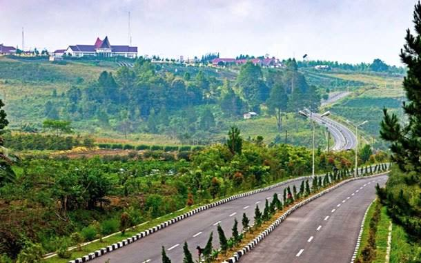

Mari mengetahui lebih dalam tentang kota Dolok Sanggul, Mulai dari Sejarah, Budaya, Wisata, dan Kehidupan Masyarakatnya.
Mulai Belajar
Mempelajari asal usul, perkembangan, dan peristiwa penting di Dolok Sanggul.
Buka MateriMengenal budaya, adat istiadat, dan kearifan lokal masyarakat Dolok Sanggul.
Buka MateriDolok Sanggul adalah sebuah kecamatan di Kabupaten Humbang Hasundutan , Sumatera Utara, yang dikenal dengan keindahan alam, budaya batak, dan masyarakatnya yang ramah.